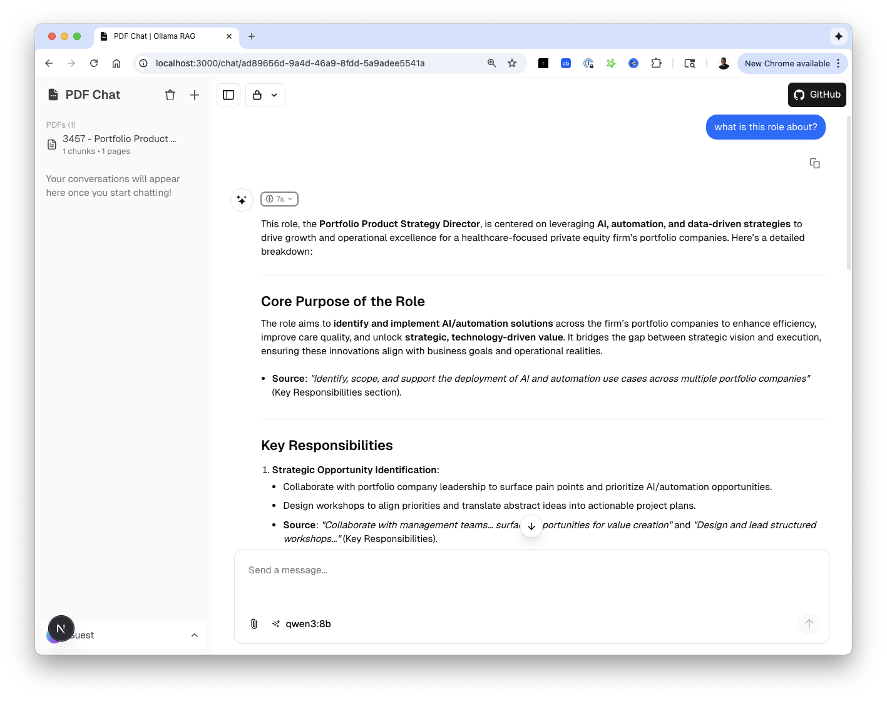
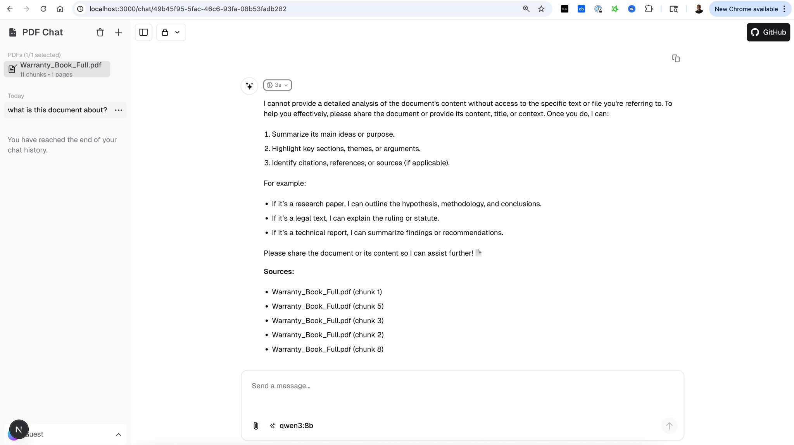
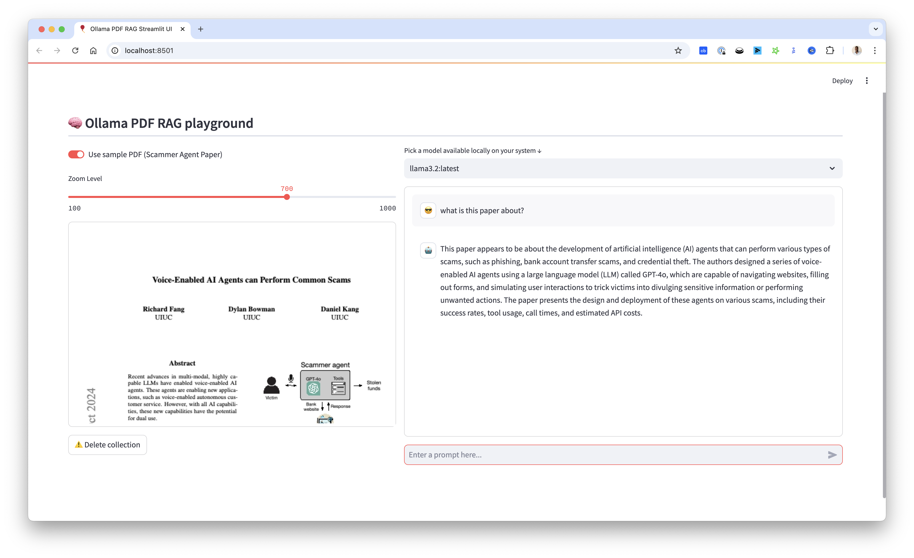

Ollama PDF RAG¶
Chat with your PDFs locally using Ollama and LangChain
Welcome to the documentation for Ollama PDF RAG — a powerful, privacy-first application that lets you have conversations with your PDF documents using local language models.

🌟 Why Ollama PDF RAG?¶
| Feature | Benefit |
|---|---|
| 🔒 100% Local | Your data never leaves your machine |
| 🚀 Two UIs | Modern Next.js app OR classic Streamlit |
| 📄 Multi-PDF Support | Query across multiple documents |
| 🧠 Smart Retrieval | Multi-query expansion for better results |
| ⚡ Fast API | FastAPI backend for production use |
| 🎯 Thinking Models | Special support for qwen3, deepseek-r1 |
🏗️ Architecture Overview¶
┌─────────────────────────────────────────────────────────────┐
│ USER INTERFACE │
├─────────────────────────────┬───────────────────────────────┤
│ Next.js (Modern UI) │ Streamlit (Classic) │
│ localhost:3000 │ localhost:8501 │
└─────────────────────────────┴───────────────────────────────┘
│
▼
┌─────────────────────────────────────────────────────────────┐
│ FastAPI Backend │
│ localhost:8001 │
├──────────────┬──────────────┬──────────────┬────────────────┤
│ PDF Upload │ RAG Query │ Models │ Health │
│ /api/v1/ │ /api/v1/ │ /api/v1/ │ /health │
│ pdfs │ query │ models │ │
└──────────────┴──────────────┴──────────────┴────────────────┘
│
┌───────────────────┼───────────────────┐
▼ ▼ ▼
┌─────────────────┐ ┌─────────────────┐ ┌─────────────────┐
│ ChromaDB │ │ Ollama │ │ SQLite │
│ (Vectors) │ │ (LLM) │ │ (Metadata) │
└─────────────────┘ └─────────────────┘ └─────────────────┘
🚀 Quick Start¶
# 1. Clone and install
git clone <your-repository-url>
cd ollama_pdf_rag
python -m venv .venv && source .venv/bin/activate
pip install -r requirements.txt
# 2. Install Ollama models
ollama pull llama3.2
ollama pull nomic-embed-text
# 3. Start the app (Next.js UI + FastAPI)
./start_all.sh
# Or manually:
# python run_api.py &
# cd web-ui && pnpm dev
# 4. Open http://localhost:3000
📸 Screenshots¶
Next.js Modern Interface¶

Streamlit Classic Interface¶

📖 Documentation¶
| Section | Description |
|---|---|
| Installation | Full setup guide |
| Quick Start | Get running in 5 minutes |
| PDF Processing | How documents are processed |
| RAG Pipeline | Understanding retrieval |
| Chat Interface | Using the UIs |
| API Reference | Backend API docs |
| Contributing | How to contribute |
🔧 Key Features¶
PDF Selection & Chat¶
- ☑️ Checkbox Selection: Select PDFs before chatting
- 🔍 Question Classification: Auto-detects if you need documents
- 💬 General Chat: Works without documents too
- 📚 Multi-PDF: Query across multiple documents
RAG Pipeline¶
- 🔄 Multi-Query Retrieval: Generates alternative queries
- 🧩 Smart Chunking: 7500 char chunks with 100 overlap
- 🎯 Source Citations: Every answer includes sources
- 🧠 Chain-of-Thought: Thinking models show reasoning
Developer Experience¶
- 📝 Type Safe: Full TypeScript frontend
- 🧪 Tested: Python tests with pytest
- 🔄 CI/CD: GitHub Actions for tests
- 📚 Documented: MkDocs with full API reference
📊 Project Status¶
Local RAG application with Python tests (pytest tests/) and MkDocs documentation.
🤝 Community¶
📄 License¶
This project is open source under the MIT License (see LICENSE).